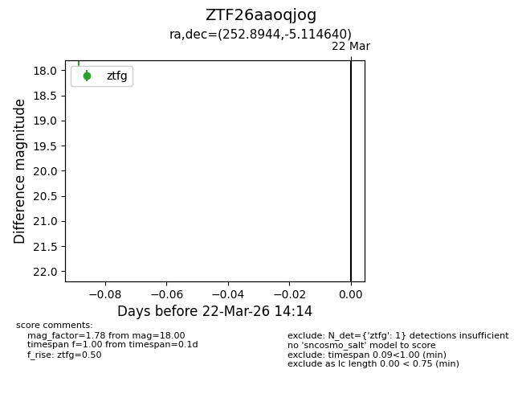
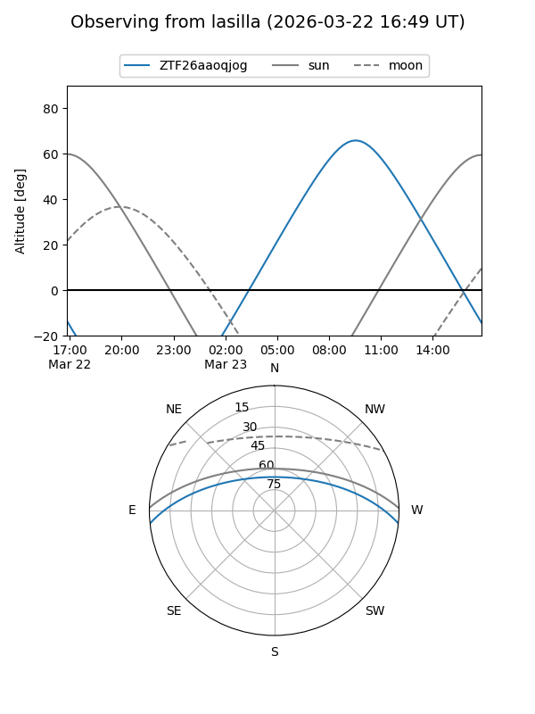
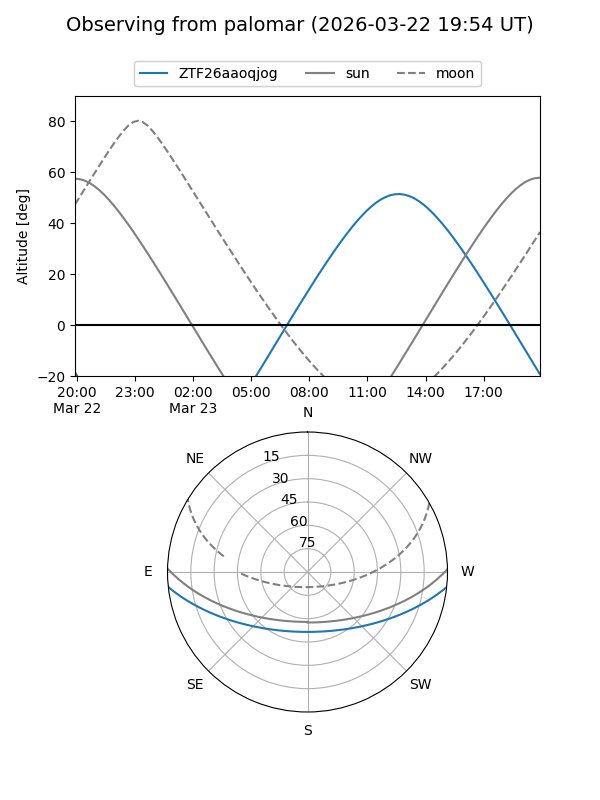

ZTF26aaoqjog
Target ZTF26aaoqjog at 2026-03-22 14:16
Aliases and brokers:
FINK: link
Lasair: link
ALeRCE: link
alt names
ZTF26aaoqjog (ztf,fink_ztf)
Coordinates:
equatorial (ra, dec) = 252.8944,-5.11464
equatorial (HMS+DMS) = 16:51:34.66,-05:06:52.70
galactic (l, b) = (13.3951,+23.70975)
Flags:
Photometry:
last ztfg=18.00
1 ztfg detections
Lightcurve

Visibility


Additional plots